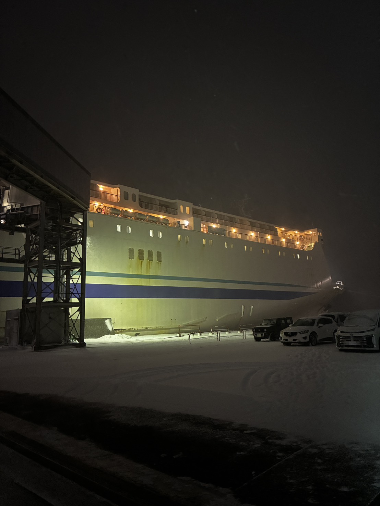
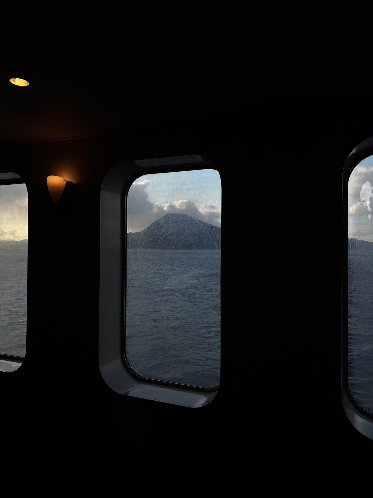
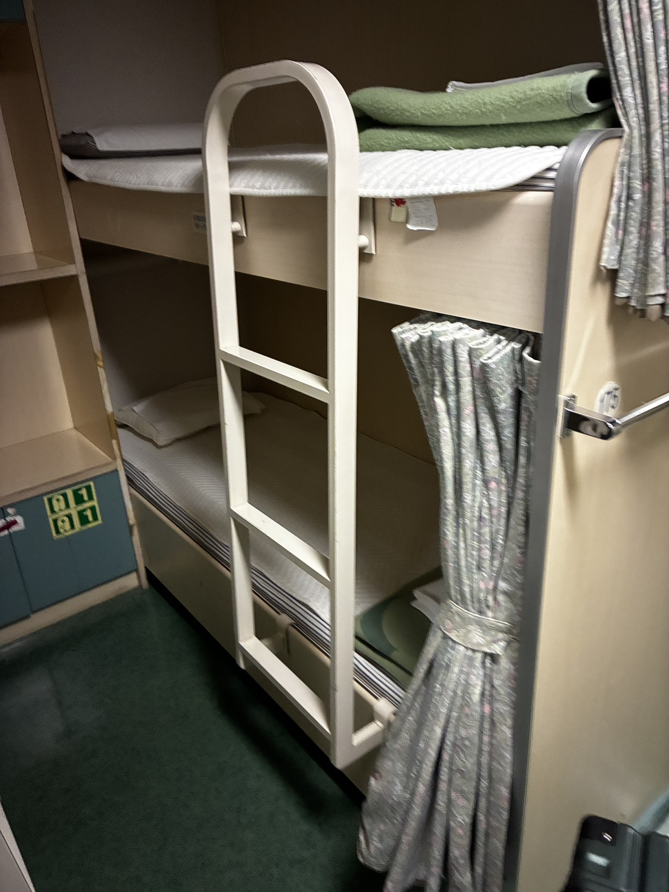
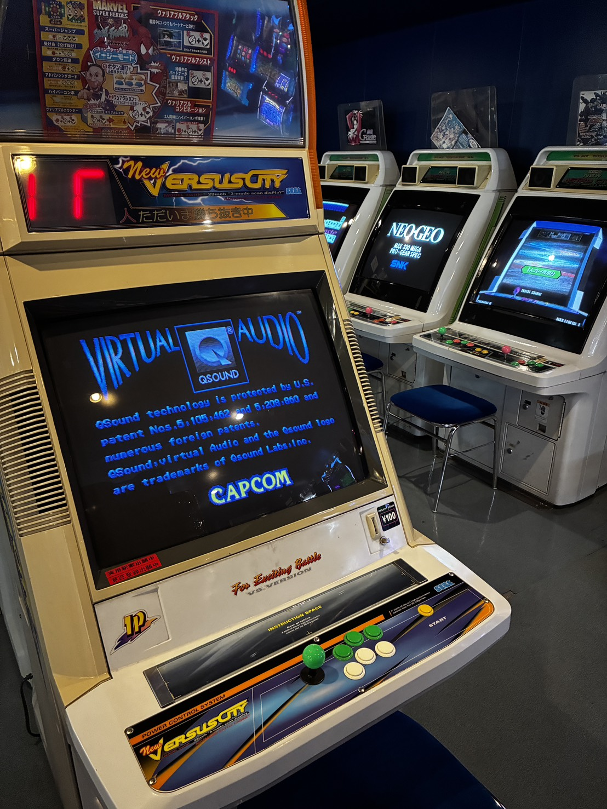
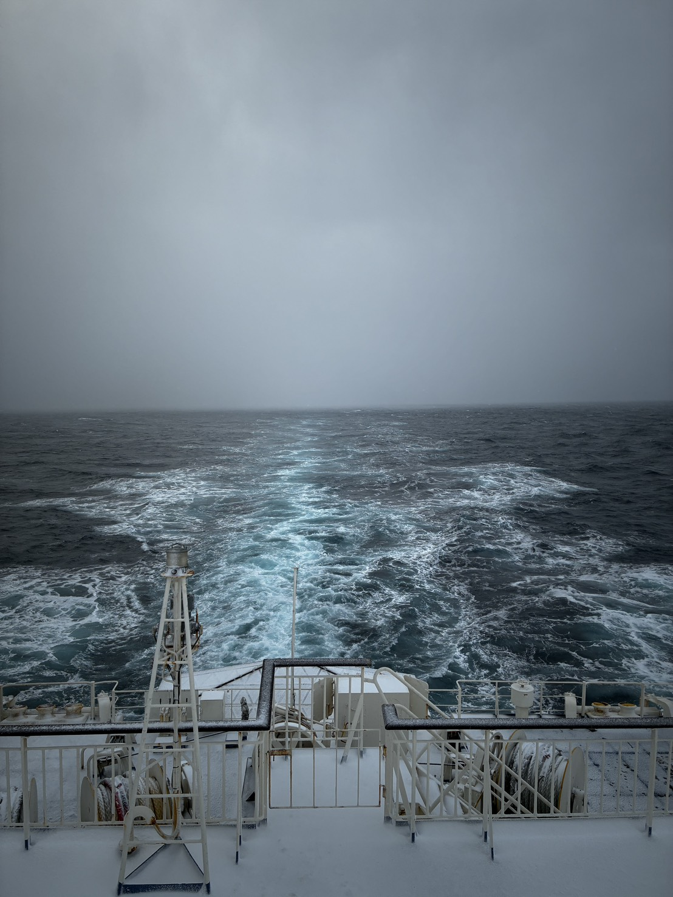
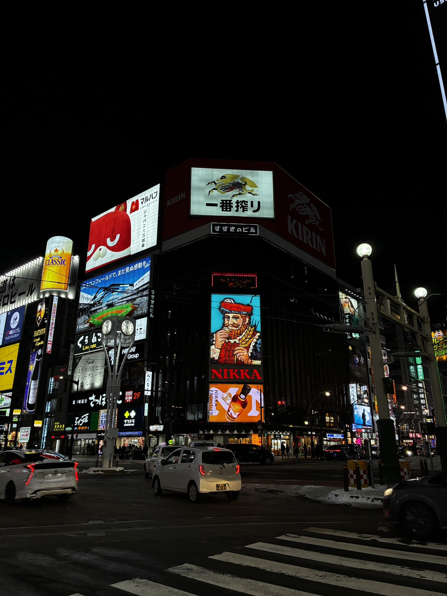
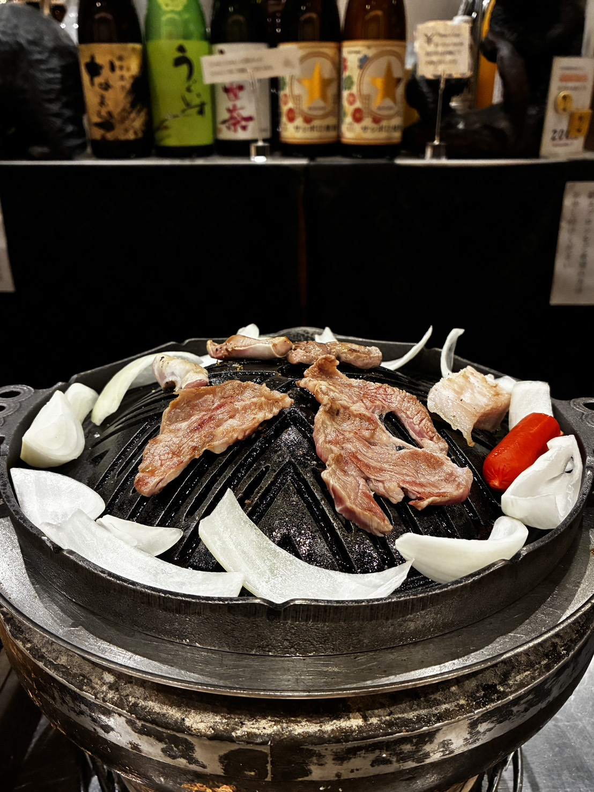
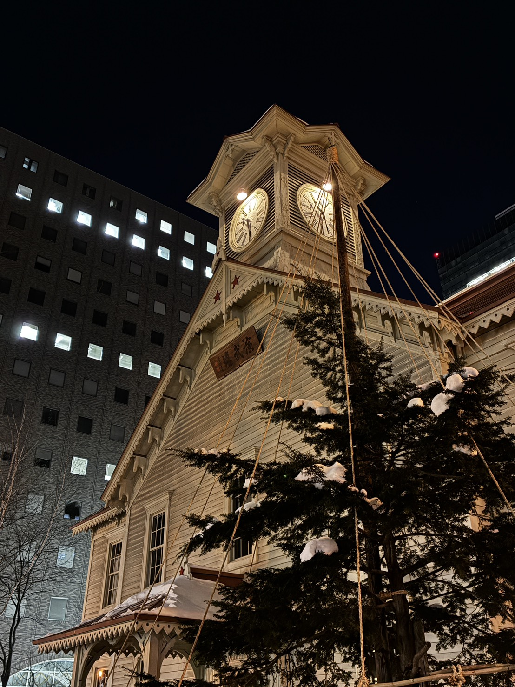

北海道編
みなさん、こんにちは。金曜1コマGAの岩間です。
今回は、1月にひとりで北海道へ行った話を書きます。
秋田港からフェリーに乗り、北海道の苫小牧港まで行きました。飛行機で行けば早いのに、あえて船を選んだのは、せっかく秋田にいるなら一度くらいフェリーで北海道に行ってみたかったからです。
内陸県出身の私からすると、フェリーに乗るというだけでかなりのイベントです。港に行き、船に乗り、海を越えて、北海道へ向かう。それだけで十分に旅！って感じでした。
ただ、その旅っぽさは、日本海の荒波によって一瞬で現実に戻されることになります。
今回のお品書き
① 朝5時、秋田港から船に乗る
② フェリーの中には、少し寂しい世界があった
③ 北海道上陸、一人ジンギスカン
① 朝5時、秋田港から船に乗る
フェリーに乗ったのは朝の5時でした。
外はまだ暗く、大雪が降っていました。早朝の港は静かで、雪の中に大きなフェリーが停まっている光景は、かなり迫力がありました。
船の名前は「らいらっく」。名前は少し可愛らしいですが、実物はとても大きいです。


船の名乗船した直後は、かなりテンションが上がっていました。「これで北海道に行くのか」と思うと、飛行機や新幹線とは違う高揚感があります。
船内に入ると、まずは探索を始めました。ひとり旅なので、誰に気を遣う必要もありません。気になるところへ行き、写真を撮り、また別の場所へ行く。この時点では、かなり楽しんでいました。
この時点では。
② フェリーの中には、少し寂しい世界があった
フェリーの中は、想像していたよりも広く、そして少し不思議な雰囲気がありました。
平成初期の空気が残っているような小さなゲームセンター。誰もいない、静かなレストラン。長く長く続く廊下。病室のような匂いがする船室と、そこに置かれた2段ベッド。

どこも便利ではあるのですが、どこか寂しさがありました。人がたくさんいる場所なのに、なぜか少しだけ取り残されたような感じがする。フェリーの中には、地上とは違う時間が流れているようでした。
朝食も、誰もいないレストランで食べました。パンとサラダとコーヒー。普通の朝ごはんなのに、船の上で食べるだけで少し特別に感じます。
そのあと、船内のゲームセンターにも行きました。古い筐体が並んでいて、まるで時間が止まった場所みたいでした。最新の施設ではないけれど、そこにしかない味があります。

そして、船内のお風呂にも入りました。
フェリーの中にお風呂があるというだけで面白いのですが、実際の湯船は想像以上でした。船が揺れるたびに、お湯が右へ左へ大きく動きます。まるで湯船の中に日本海をそのまま閉じ込めたようでした。
癒やされるために入ったはずなのに、湯船の中でも海を感じることになるとは思いませんでした。ただ、そんな細かい感想に浸っている余裕も、すぐになくなりました。
日本海が本気を出してきたからです。

船が沖に出るにつれて、揺れがどんどん強くなりました。最初は「けっこう揺れるな」くらいだったのですが、途中から完全に船酔いしました。
さっきまで船内探索に勤しんでいた私は、完全に静かになりました。フェリー旅のロマンも、ゲームセンターの懐かしさも、レストランの寂しさも、全部まとめて日本海に持っていかれました。
その時に考えていたことは、ひとつだけです。
早く陸に戻りたい。
③ 北海道上陸、一人ジンギスカン
なんとか船旅を終え、苫小牧港に到着しました。
北海道に着いた時、感動よりも先に来たのは安心でした。地面が揺れない。ただそれだけで、陸はすごいと思いました。
まだ正月の雰囲気が残っていたこともあり、札幌の街にはカップルや家族連れが多くいました。すすきのの看板は明るく、街はにぎやかでしたが、ひとりで歩いていると、どこか居場所がないようにも感じます。

それでも、この時の私はかなり前向きでした。なぜなら、陸にいるからです。
地面が揺れない。これだけで、だいたいのことは許せる気がしました。
その後、ジンギスカンの店に入りました。ここが少しきつかったです。
両隣には外国人観光客のカップル。しそうに話しながら肉を焼いています。その真ん中で、私はひとりで肉を焼き、ひとりで食べていました。
正直、少し負けた感じがしました。
でも、それを認めてしまうと、一人旅の醍醐味が消えてしまいます。ひとりで店に入り、ひとりで焼き、ひとりで食べる。これもまた一人旅です。
そう言い聞かせながら食べたジンギスカンは、普通にめちゃくちゃおいしかったです。

その後、札幌時計台も見に行きました。夜の時計台は思っていたより雰囲気があり、雪と明かりの中に静かに立っていました。
昼間なら何気なく通り過ぎてしまいそうな場所でも、夜にひとりで見ると、少し違って見えるものです。

さいごに
今回の旅で一番記憶に残っているのは、正直、北海道の観光地よりもフェリーでした。
朝5時の雪の港。
平成初期のようなゲームセンター。
誰もいないレストラン。
長い廊下。
病室のような船室。
日本海を閉じ込めたような湯船。
そして、全部を持っていく船酔い。
早く着くなら飛行機でいいと思います。ただ、フェリーにはフェリーにしかない時間がありました。
少し寂しくて、少し古くて、少し不便で、でも妙に忘れられない。そういう旅も、たまには悪くないと思います。
みなさんも、時間がある大学生のうちに、いつもと違う行き方でどこかへ行ってみてください。たぶん、目的地だけじゃなくて、移動そのものも思い出になりま
以上、岩間の孤独漫遊記でした。